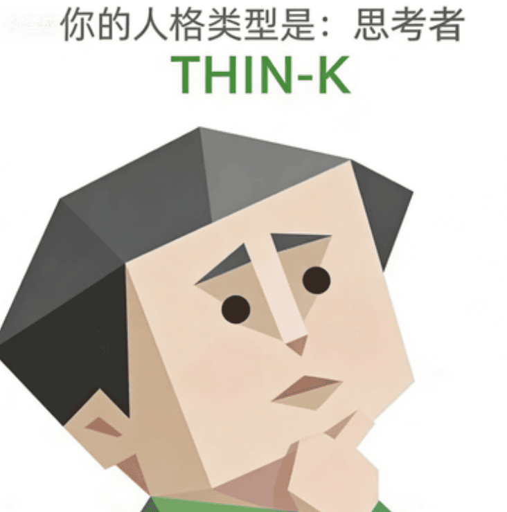

恭喜您，您测出了全中国最稀有的【THIN-K — 思考者】人格。
当别人的大脑里只有一个声音，THIN-K的大脑里住着一整个辩论队——正方、反方、裁判、观众、弹幕，一应俱全。
你会在行动前把所有可能性过一遍：最优解、最坏结果、备用方案、备用方案的备用方案，全都在脑子里跑过。
所以你看上去像在犹豫，但其实是在提高成功率。只是这个"思考"的过程，经常长得让人忘了你本来要干嘛。
📊 维度画像
🧠 自我模型：自尊自信 L · 自我清晰度 M · 核心价值 M
对自我评价偏低，认知时清时浊，价值观摇摆不定
💗 情感模型：依恋安全感 L · 情感投入度 H · 边界与依赖 M
极度缺乏安全感，但一旦信任就全情投入，边界时强时弱
🌍 态度模型：世界观倾向 L · 规则与灵活度 H · 人生意义感 M
对世界有悲观倾向，规则不过是分析工具，意义感时有时无
⚡ 行动驱力：动机导向 M · 决策风格 L · 执行模式 L
动力来源不稳定，决策缓慢到让人抓狂，执行能量像手机只剩1%电量
🤝 社交模型：社交主动性 L · 人际边界感 H · 表达与真实度 M
不主动社交，内心筑有高墙，说话遮遮掩掩
🎯 核心特质
📺
脑内弹幕永动机
THIN-K的脑子就像开了永久弹幕的直播间——别人说一句话，你能在脑子里复盘八百遍。
一句话能反复想10遍：我是不是说错了？是不是很蠢？夸你？你觉得对方在客气。批评你？你能难过到明年。
📡
敏感雷达系统
你拥有堪比军事雷达的敏感度。对象五小时没回消息，你已经在心里走完了一整套"他/她不爱我了→我太敏感了→但我真的很难过→还是算了"的连续剧。
敏感多疑，一点风吹草动都能让你翻来覆去睡不着。
📖
过度解读大师
一片落叶是秋天的信号，一个眼神是世界末日的预兆。
你不是想太多，你是把整个世界都当成了一道阅读理解题。
💞 人际相处
和 THIN-K 相处指南
和THIN-K相处，最重要的原则是：别让他们猜。不要给THIN-K任何可以"过度解读"的空间。
他们测试你的方式，就是反复确认你是不是真的不讨厌他们。你会被问N遍"你确定吗？"请不要烦，因为他们只是太害怕失去。
✅ THIN-K + 坚定清晰的人 = 最佳拍档
❌ THIN-K + 同样内耗的人 = 一起淹死在脑内风暴
THIN-K是把自己锁在一间装满镜子的房间里的诗人——
每面镜子里都有一个不同的自己，
每个自己都在想同一件事：别人怎么看我？